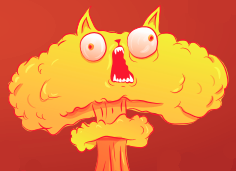

Exploding kittens
Defuse Cards (Cartas de Desactivación)
Desactivas un Exploding Kitten, colocas la carta en el mazo de descarte y podrás devolver el Exploding Kitten al mazo, en la posición que quieras.
Attack Cards (Cartas de Ataque)
Esta carta pone fin a tu(s) turno(s) sin robar una carta y hace que el siguiente jugador tenga dos turnos seguidos. Si la víctima de una carta de Ataque juega una carta de Ataque, sus turnos se dan por terminados de inmediato, y el siguiente jugador tendrá que jugar dos turnos.
Nope Cards (Cartas para Negar)
Esta carta detiene cualquier acción excepto un Exploding Kitten o una carta de Desactivación. Puedes jugar una carta Nope en cualquier momento antes de que haya empezado una acción, incluso si no es tu turno.
Skip Cards (Cartas para Pasar)
Esta carta pone fin a tu turno de inmediato sin robar una carta.
Favor Cards (Cartas de Favor)
Obliga a cualquier otro jugador a que te dé una carta de su mano. Ellos eligen qué carta darte.
Favor Cards (Cartas para Barajar)
Baraja el Montón de cartas para robar sin ver las cartas hasta que te pidan que pares. Es muy útil cuando ves venir un Exploding Kitten.
See the future Cards (Cartas para Ver el futuro)
Mira las tres siguientes cartas del mazo de cartas para robar y vuélvelas a poner en la baraja en el mismo orden. No les enseñes las cartas a los demás jugadores.
Cat Cards (Cartas de gatos)
Estas cartas no sirven de nada por sí solas, pero si reúnes dos cartas de Gato iguales, puedes jugarlas como una pareja para robar una carta al azar de la mano de otro jugador.
Link a las reglas completas